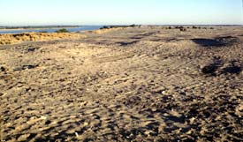
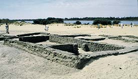
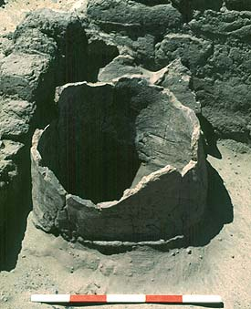
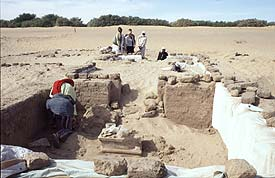
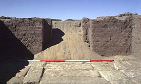
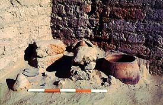
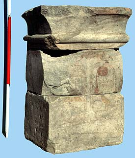
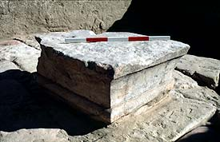

|
In 1993 the
British once again returned to Kawa, firstly to undertake a detailed
survey of the environs of the town and then, since 1997, to recommence
excavations in the town and its associated cemetery. Griffith and
his team had concentrated on what was clearly the main religious
centre of the town. In line with modern fashions in archaeology
the current project of the Sudan Archaeological Research Society,
has sought to answer questions concerning the everyday lives of
the population of the town, how they lived, what they ate and at
what age and why they died, whether they died after a healthy long
life or succumbed to disease or a violent death at an early age.
The first
step was to produce a detailed plan of the whole town which was
found to be at least twice as large as Griffith had thought. It
is over 1km in length and up to 400m wide and rises a maximum of
11m above the plain (Plate 3).
|

| 3.
General view over the ruins at Kawa looking north along the
Nile. |
|
|
It is likely,
but yet to be proven, that
this mound is entirely man-made, it is a tell like the type famous
from excavations elsewhere in the Middle East. Little now protrudes
above the sand yet the richness of the town can be appreciated from
the vast quantities of pottery which litter the surface along with
beads, and metal and stone objects. The remains of buildings flush
with the surface are visible everywhere and as part of the current
project these are being planned. We simply brush a few centimetres
of sand from the surface and the walls with their well-laid mud
bricks are plain to see. Some of these buildings are of very large
size, one complex is over 85m in length and 56m wide. So far houses,
monumental buildings, temples and kilns have been located. Excavations
have concentrated in two areas of the town. One of these is among
a group of houses of which five and two adjacent streets have been
cleared (Plate 4).
|

| 4.
Excavating early Kushite houses close to the banks of the Nile.
|
|
|
The houses are
well built but, like modern houses in the local village, have floors
of mud or sand and little in the way of internal furnishings. There
are a few mud bins and a number of cylindrical ceramic ovens (Plate
5). In some rooms fires were lit directly on the floor. The interior
of the buildings were kept quite clean during their use but the
rubbish was thrown out of the window and formed large piles in the
street. However, when rooms were abandoned they were also used as
rubbish dumps and contain a wealth of pottery, animal bone and floral
remains - a real treasure trove for the archaeologist. All the houses
investigated so far date to the earlier Kushite period, probably
to the 8th - 6th centuries BC.
|

| 5.
A ceramic cylindrical oven in the corner of a room in Building
B12. Such ovens, used to make bread, are still to be found in
Central Asia although the type went out of use many centuries
ago in the Nile Valley. |
|
|
Right at the
very southern end of the town, that is over 750m south of the main
religious complex is a group of three buildings. The most interesting
is a small rectangular structure 11 x 4.5m in size aligned east
- west and divided into three rooms each with a central doorway
in the west wall (Plate 6).
|

| 6.
Excavation the shrine at the southern edge of the site in January
2001. |
|
|
The eastern
room had a fine floor of large white sandstone blocks (Plate 7),
its walls were all plastered with mud and were painted.
|

| 7.
Stone floor in the eastern room of the shrine. |
|
|
Later there
were two phases of additions with rooms being built on the south
side of the original block, a doorway being cut through the south
wall of the original building to allow access.
These
additional rooms contained hearths (Plate 8), domestic refuse and
an oven of the type as seen in the houses already noted. Excavation
of this building has yet to be completed but the whole of one room
and the upper parts of the other two of the primary rooms have been
excavated.
|

|
8.
A hearth in room V of the shrine.
|
|
The
lower part was covered in white paint. Above this were narrow horizontal
bands of red, yellow and blue which formed the lower margin of the
main register. That on the north wall was the best preserved and showed
a king wearing fine gold sandals processing towards two gods stood
one behind the other. Unfortunately the scene is only preserved to
a little above the ankles of the figures but many fragments of the
upper parts of the scenes were found in among the rubble. Within the
rubble was also three large stone blocks, which when reassembled formed
an altar or bark stand and bears the painted cartouches of the king
Taharqo, his throne name Nefertemkhura on the left and his birth name
Taharqo on the right (Plates 9 & 10)
|

| 9.
A sandstone altar bearing the names of Taharqo, King of Kush
from 690 - 664 BC from the shrine, Building A1. |
|
| |

| 10.
The stone floor, and the altar top in the eastern room of the
shrine. |
|